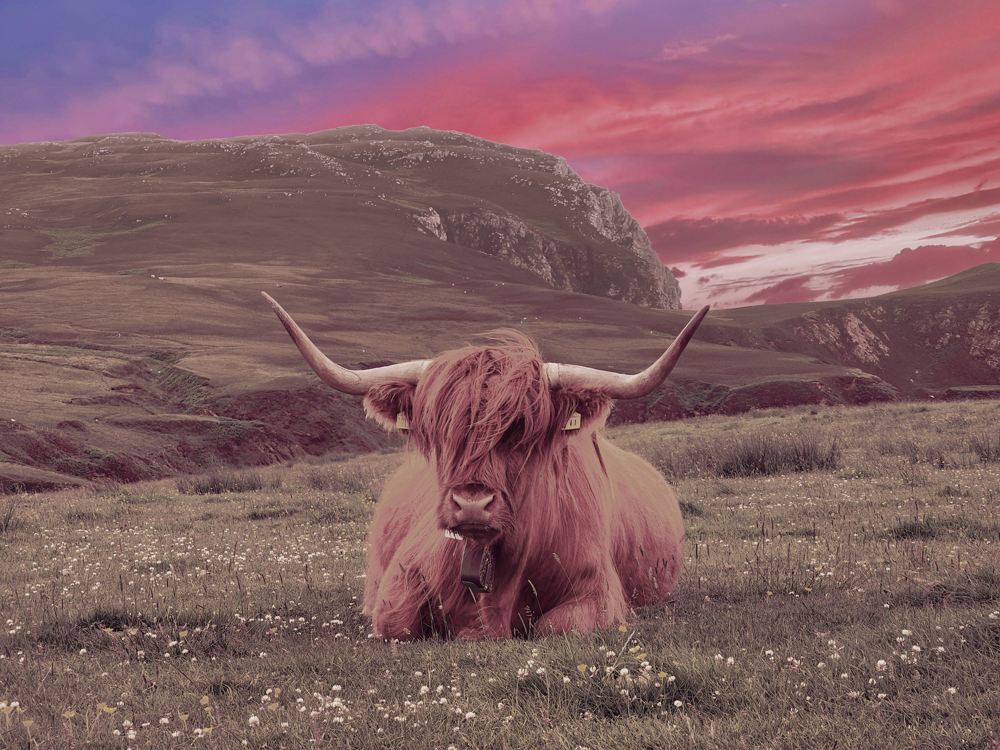

Bild 1


Redigering: I denna bild har skyboxen (himmeln) klippts ut och ersatts med motsvarande skybox från nästkommande bild. Därefter har jag tonat om och reducerat mättnad för det gröna färgintervallet. Målet var att bilden skullee bli mer blå och mot kyliga toner.